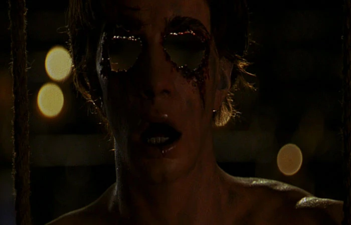

Darry JennerIterpretado por Justin Long: Um jovem universitário que viaja de carro com a irmã de volta para casa. Ele é curioso, acaba descobrindo o segredo do monstro e se torna o alvo principal destino de Darry é selado por um ato de curiosidade impulsiva. Após verem o monstro descartar o que pareciam ser corpos em um grande cano nos fundos de uma igreja abandonada, Darry insiste em investigar o local, mesmo sob os fortes protestos de Trish. Ao escorregar pelo cano, ele descobre um covil macabro: uma verdadeira "capela sistina" de cadáveres costurados e preservados nas paredes e no teto. Essa terrível descoberta transforma os irmãos em alvos imediatos da criatura. Ao longo de toda a perseguição, fica claro que o Creeper tem um interesse específico em Darry. A criatura, que caça a cada 23 anos por 23 dias, escolhe suas vítimas através do cheiro do medo, consumindo órgãos humanos para regenerar os seus próprios. O pavor de Darry atrai o monstro, que identifica nos olhos do jovem exatamente o que precisa. Apesar dos esforços desesperados de Trish para se oferecer no lugar do irmão, Darry é capturado nos momentos finais do filme. A cena de encerramento, ao som da canção "Jeepers Creepers", revela o corpo sem vida de Darry na toca do monstro, com seus olhos cruelmente removidos e roubados pelo Creeper.
 Trish Jenner
Trish Jenner
O trauma original (2001): No primeiro filme, Trish e seu irmão caçula, Darry Jenner (Justin Long), estão voltando de carro da faculdade por estradas rurais da Flórida. Eles cruzam o caminho do "Creeper" a Criatura, uma entidade demoníaca milenar que acorda a cada 23 anos por 23 dias para se alimentar de partes humanas. Trish demonstra ser a mais racional e cautelosa da dupla, mas, após o monstro capturar seu irmão, ela chega a oferecer a própria vida em troca da dele. Infelizmente, ela não consegue salvá-lo O laço fraternal entre os dois atinge o ápice emocional no clímax do filme, dentro da delegacia de polícia. Ao perceber que o Creeper encurralou Darry e quer levá-lo, Trish se desespera e implora para a criatura levar a vida dela em troca da do irmão. O monstro, no entanto, rejeita a oferta porque especificamente o medo de Darry continha os órgãos (os olhos) de que ele necessitava. Trish sobrevive ao primeiro filme carregando o trauma de ver o irmão ser levado pelos ares. Vinte e três anos após a tragédia, Trish retorna no terceiro filme da franquia (Olhos Famintos 3, lançado em 2017). Agora uma mulher rica e mãe de um filho adolescente chamado Darry (uma homenagem ao falecido irmão), ela usa seu trauma como combustível para liderar um grupo de caça fortemente armado, decidida a destruir o Creeper de uma vez por todas para vingar a morte de seu irmão e proteger seu filho.